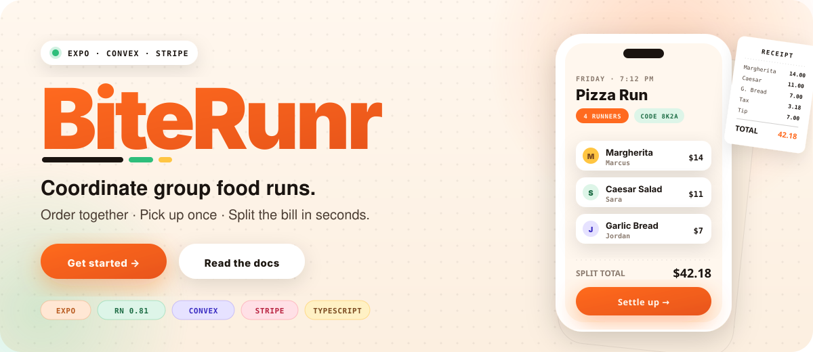
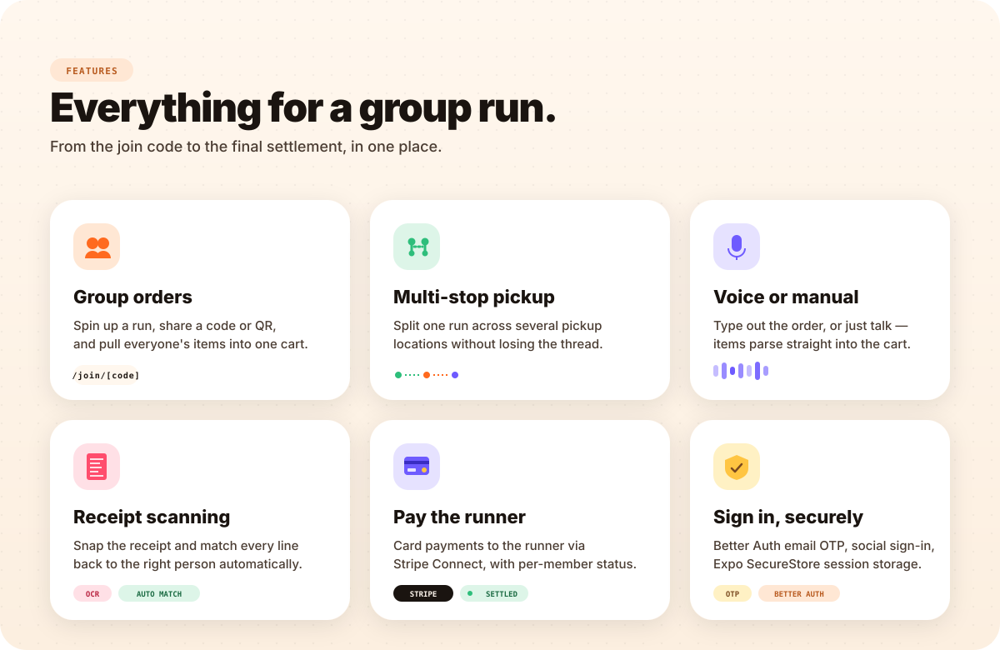
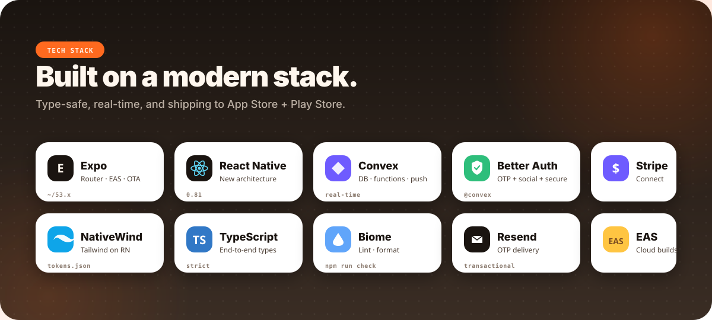

Quick start · Features · Tech stack · Architecture · Scripts
BiteRunr is an Expo/React Native app for coordinating group food runs. A runner creates an order, invites friends, collects everyone's items, picks up from one or more locations, scans the receipt, and settles the split through Stripe Connect.
This repository is primarily the mobile app. The admin/ and
landing/ directories are separate Vite apps with their own
dependencies and Convex deployments.
GitHub strips README style and link tags, so the
custom visual design lives inside SVG panels in assets/readme/.
The rest stays plain, searchable HTML.
packageManagernpm installCreate local environment files:
cp .env.example .env.localFill in at least the public mobile app values:
CONVEX_DEPLOYMENT=
EXPO_PUBLIC_CONVEX_URL=
EXPO_PUBLIC_STRIPE_PUBLISHABLE_KEY=
EXPO_PUBLIC_CONVEX_SITE_URL=
EXPO_IOS_BUNDLE_IDENTIFIER=com.company.example
EXPO_ANDROID_PACKAGE=com.company.example
EXPO_IOS_APPLE_TEAM_ID=
EXPO_USES_APPLE_SIGN_IN=false
EXPO_EAS_PROJECT_ID=
EXPO_OWNER=
Convex server secrets such as STRIPE_SECRET_KEY,
STRIPE_WEBHOOK_SECRET, AUTH_RESEND_KEY, OAuth
provider secrets, and SITE_URL should be configured on the Convex
deployment, not committed to the repo.
Most app commands run npm run sync-styles first. That script
converts CSS variables from global.css into
tokens.json so navigation and JavaScript theme code stay in sync.
npm run dev # Expo dev server
npm run ios # Build and run on iOS simulator
npm run android # Build and run on Android emulator
npm run phone # Build and run on a physical iPhone; set IPHONE if needed
npm run web # Expo web targetRun Convex locally against one of the configured cloud deployments:
npm run convex:br # production project
npm run convex:brtest # test project


components/br/
| Command | Description |
|---|---|
npm run dev |
Start Expo with a cleared Metro cache |
npm run ios |
Build and run the iOS app |
npm run android |
Build and run the Android app |
npm run phone |
Run on a physical iPhone |
npm run web |
Start the Expo web target |
npm run prebuild |
Regenerate native ios/ and android/ projects
|
npm run convex:br |
Start Convex dev for the production project |
npm run convex:brtest |
Start Convex dev for the test project |
npm run lint |
Run Biome lint |
npm run lint:fix |
Run Biome lint with autofixes |
npm run format |
Check formatting with Prettier |
npm run format:write |
Format files with Prettier |
npm run check |
Run lint and formatting checks |
npm run eas:build |
Build a production iOS .ipa locally |
npm run eas:build:android |
Build a production Android .aab locally |
There is no dedicated test runner or typecheck script. Use
npx tsc --noEmit for a one-shot TypeScript check.
app/ Expo Router routes
(auth)/ Sign-in, sign-up, and OTP screens
(protected)/ Authenticated tabs, orders, account, and settlement flows
join/[code].tsx Invite-code join modal
components/ Shared React Native components
br/ New BiteRunr design system components
common/ Older shared UI primitives
convex/ Convex backend functions, schema, auth, payments, receipts
hooks/ Shared React hooks
lib/ App utilities, auth client, theme, grouping and matching logic
assets/ App icons, splash images, and static assets
admin/ Separate admin app
landing/ Separate landing page app
app/_layout.tsx mounts the provider stack for Stripe, Convex
Better Auth, app auth state, theming, safe areas, and the root stack.
Protected screens live under app/(protected) and redirect
unauthenticated users back to app/(auth).
Better Auth owns its own Convex component tables. The app also has a separate
users table in convex/schema.ts, linked to the
Better Auth user by email. Backend helpers in
convex/authHelper.ts expose getUserId,
ensureUser, and related utilities for this bridge.
Monetary values are stored as integer cents. Platform fee logic lives in
convex/fees.ts and is reused by payment-related backend
functions.
Two styling systems coexist:
global.css
components/br/, backed by
lib/br-theme.ts
When changing CSS variables, regenerate tokens.json:
npm run sync-styles
The ios/ and android/ directories are generated by
Expo prebuild. Prefer changing native configuration through
app.config.ts, then run:
npm run prebuild